Abra o Flowlab e entre em MY GAMES


O clipe repete sozinho. Repare onde o cursor vai antes de clicar.
Foto da tela.
Abra o navegador em flowlab.io e entre com a sua conta.
No alto da página, clique em My Games. Aparecem os jogos que você já fez.
- Não lembro a senha
- Chame o professor. Não crie conta nova: os seus jogos estão na antiga.
- A lista está vazia
- Confira se entrou com a mesma conta das outras aulas.
Escolha o jogo-BASE
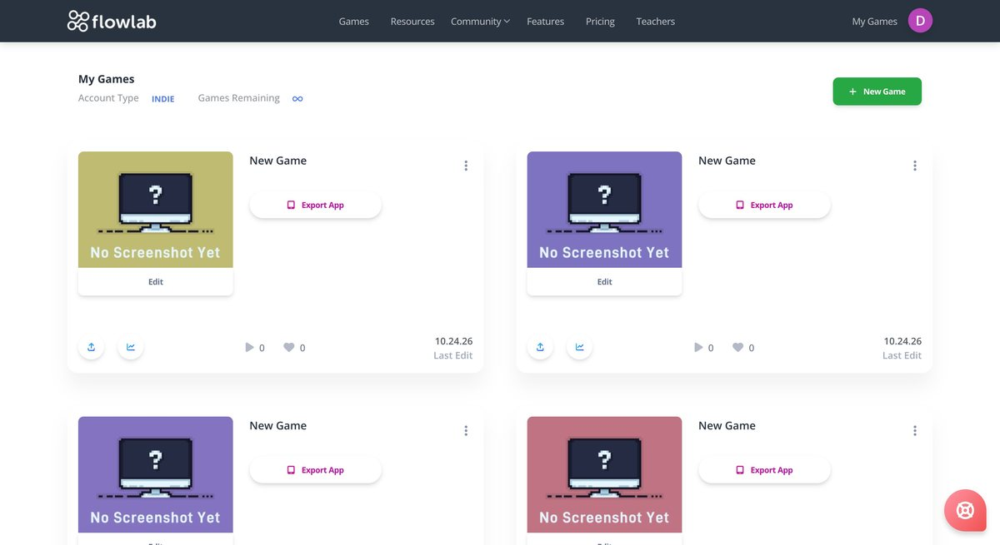
Foto da tela.
Todos os cartões se chamam New Game e ainda não têm figura (No Screenshot Yet). O que ajuda: o primeiro cartão, no alto à esquerda, é o jogo que você mexeu por último.
Para partir do jogo da Aula 11 (a estrela que gira), o cartão certo é o primeiro. Se você mexeu em outro jogo depois dela, o cartão da Aula 11 desceu uma casa. Na dúvida, abra o cartão e jogue: o professor ajuda.
(Você também pode partir de qualquer outro jogo do curso.)
- Não sei qual é o jogo da Aula 11
- Clique em Edit num cartão: se aparecer a noite azul com a estrela, é ele. Volte para My Games e siga.
- Quero partir de outro jogo
- Pode. O caminho é o mesmo para qualquer cartão.
Abra o menu do cartão
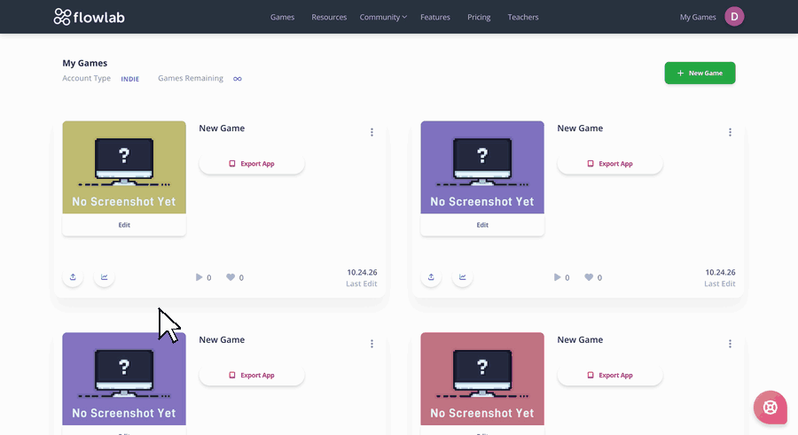
O clipe repete sozinho. Repare onde o cursor vai antes de clicar.
Foto da tela.
No cartão do jogo-base, clique nos três pontinhos (⋮), no canto de cima à direita do cartão.
Abre um menu pequeno com quatro opções: Add Tag, Clone, Lock Version e Delete.
⚠️ Não clique no Delete (em vermelho): ele apaga o jogo.
- Não acho os três pontinhos
- Eles ficam no canto de cima, à direita do nome do jogo, dentro do cartão.
- O menu fechou
- Clique nos pontinhos de novo.
CLONE o jogo
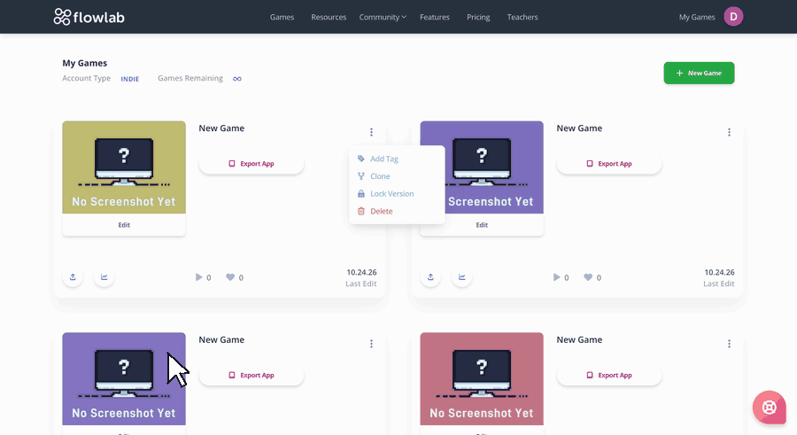
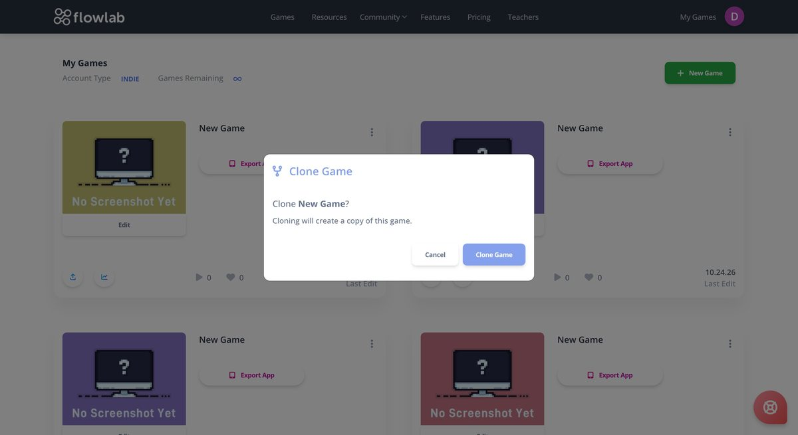
O clipe repete sozinho. Repare onde o cursor vai antes de clicar.
Foto da tela.
No menu, clique em Clone. Abre uma janela: Clone New Game? — Cloning will create a copy of this game (clonar vai criar uma cópia deste jogo).
Clique no botão azul Clone Game. Espere alguns segundos.
- Cliquei em Cancel
- Faça de novo: pontinhos, Clone, e agora o botão azul Clone Game.
- Clonei duas vezes
- Sem problema: ficam duas cópias. Use a primeira e deixe a outra quieta.
Abra o CLONE
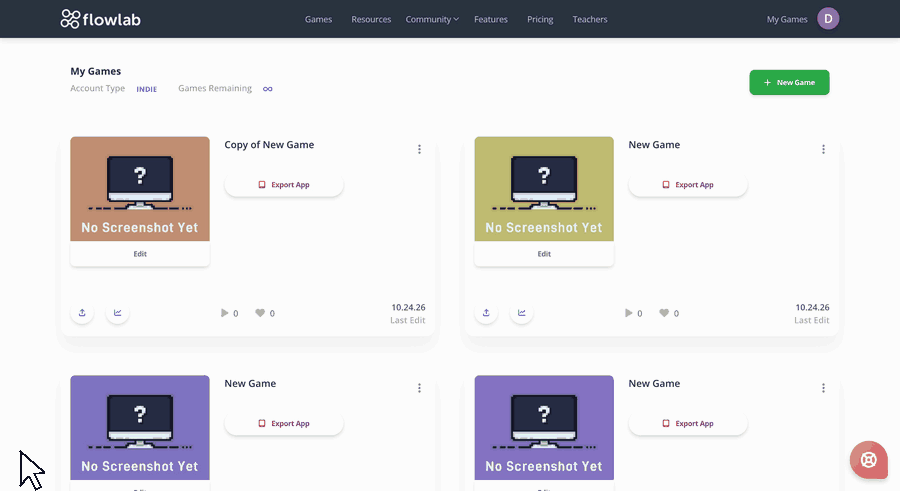
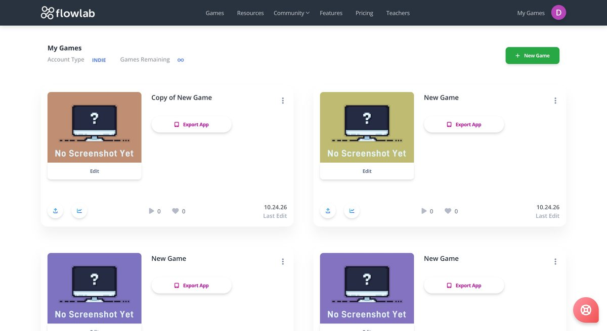
O clipe repete sozinho. Repare onde o cursor vai antes de clicar.
Foto da tela.
A cópia aparece no primeiro cartão, com o nome Copy of New Game (cópia de New Game). O jogo antigo desceu uma casa.
Clique em Edit, embaixo da figura do cartão Copy of New Game.
- Abriu o jogo antigo
- Você clicou no cartão errado. Volte para My Games e abra o primeiro.
- A lista não mudou
- Espere uns segundos e aperte F5 para recarregar a página.
O clone é o MESMO jogo
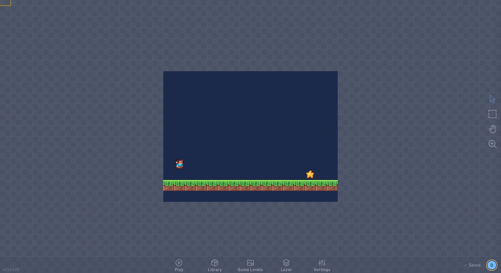
Foto da tela.
Olhe o editor: a noite azul, o chão, o boneco e a estrela — tudo igual ao jogo da Aula 11. Os blocos também vieram junto com os objetos: você vai ver a estrela girar, brilhar e sumir quando o boneco encostar (e dá para ouvir o som de moeda).
É uma cópia só sua: a partir daqui, tudo o que você mudar acontece nela.
- O editor está vazio
- Você abriu um jogo novo, e não o clone. Volte para My Games e clique em Edit no primeiro cartão.
Abra o SETTINGS
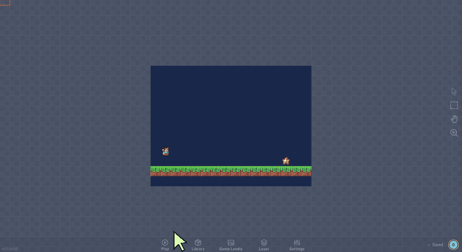
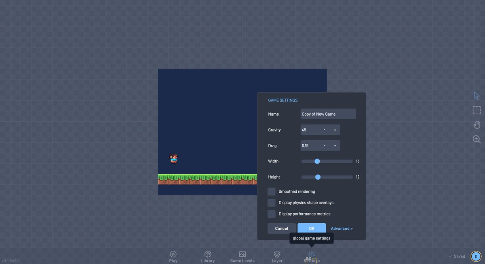
O clipe repete sozinho. Repare onde o cursor vai antes de clicar.
Foto da tela.
Na barra de baixo, clique em Settings (o último botão, à direita).
Abre o painel GAME SETTINGS, com os campos Name (o nome do jogo), Gravity, Drag, Width e Height.
Hoje só o Name interessa.
- Não acho o Settings
- É o último botão da barra de baixo, com o desenho de barrinhas e bolinhas.
Dê um NOME ao seu jogo
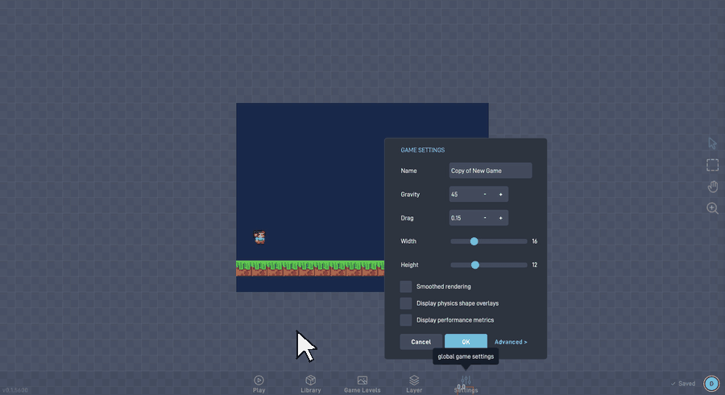
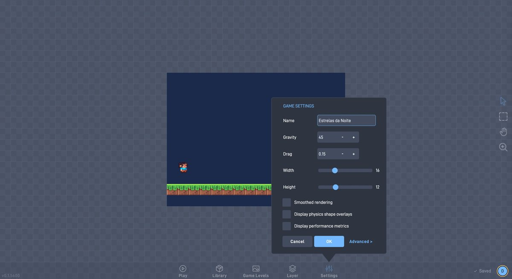
O clipe repete sozinho. Repare onde o cursor vai antes de clicar.
Foto da tela.
Clique no campo Name. Aperte Cmd+A (no Windows, Ctrl+A) para selecionar o nome antigo e escreva o seu: Estrelas da Noite (ou o nome que você preferir).
Clique no botão azul OK.
É esse nome que aparece na página do jogo e na lista de jogos.
- O nome ficou emendado no antigo
- Faltou selecionar tudo antes de escrever. Aperte Cmd+A (ou Ctrl+A) no campo e escreva de novo.
- Apertei Cancel
- O nome volta a ser Copy of New Game. Abra o Settings de novo e escreva.
Pinte um céu NOVO
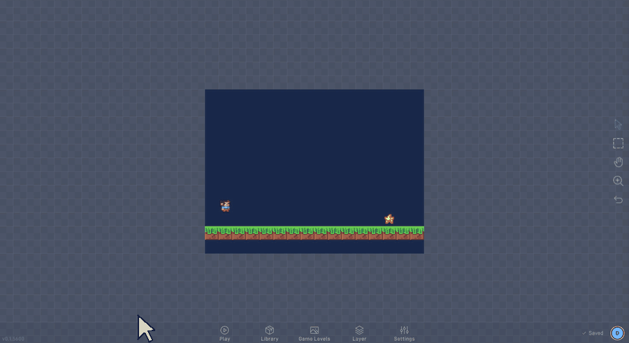
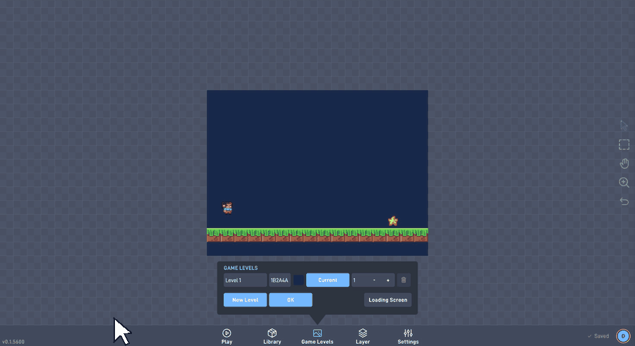
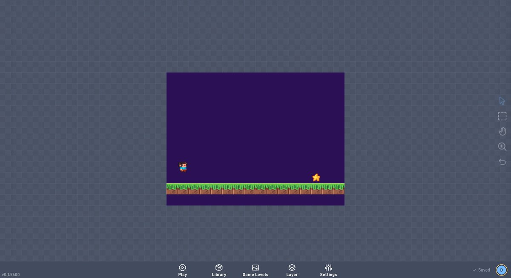
O clipe repete sozinho. Repare onde o cursor vai antes de clicar.
Foto da tela.
Clique em Game Levels, na barra de baixo. No campo da cor (o que mostra 1B2A4A), apague, escreva 2B1055 e aperte Enter.
Um roxo de noite. Escolha a cor que quiser: são seis letras e números (de 0 a F).
- Digitei e não mudou
- Aperte Enter depois da cor.
- Quero outra cor
- Escreva outras seis letras e números no mesmo campo. Se o céu ficar branco, a estrela deixa de brilhar: o brilho é uma soma de cores (Aula 11).
Troque o JOGADOR: o desenho
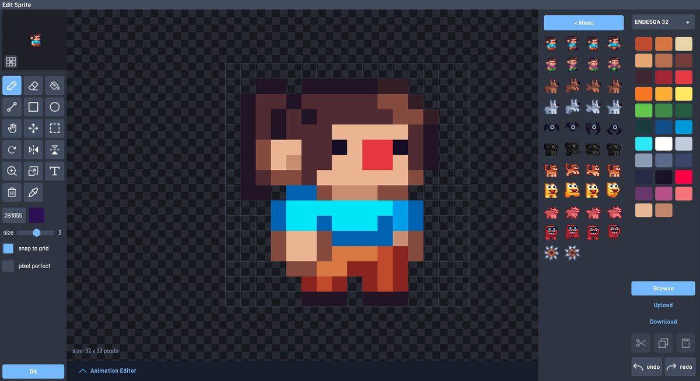
Foto da tela.
Clique no boneco e, no painel dele, no quadrado edit sprite, à esquerda.
Se não aparecer a grade de bonecos à direita, clique em Browse, depois em Flowlab Sprites e na faixa azul Characters.
A grade tem uma fileira de cada personagem: cada linha é um boneco diferente (as figuras da linha são variações do mesmo personagem).
- Não acho o Browse
- Ele fica embaixo da paleta de cores, na coluna da direita.
- Apareceu o botão azul < Menu
- Ele serve para voltar aos pacotes. Se você já está na grade de personagens, não precisa dele.
Escolha OUTRO boneco
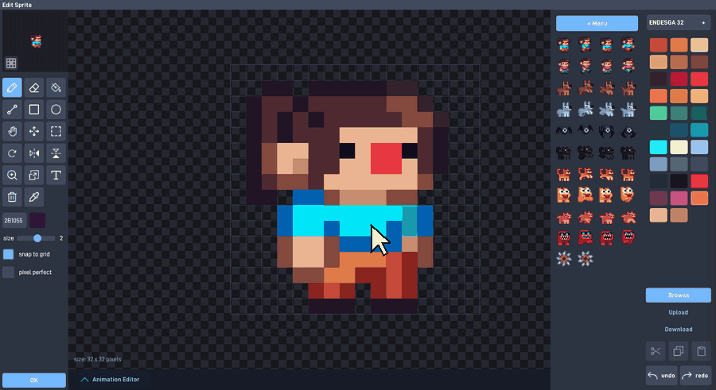
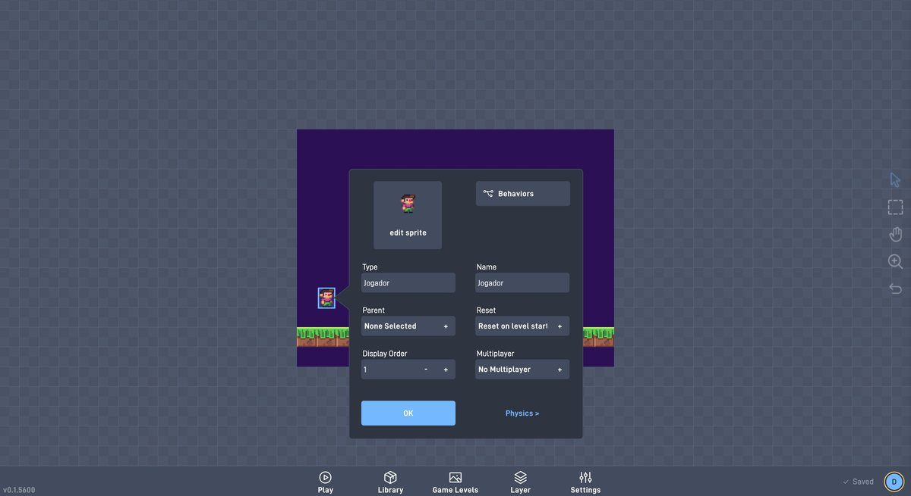
O clipe repete sozinho. Repare onde o cursor vai antes de clicar.
Foto da tela.
Na grade, clique no segundo boneco de cima para baixo, na primeira coluna (uma menina de roupa rosa e verde). Feche no OK, no canto de baixo à esquerda, e feche também o painel do boneco.
O boneco novo entra no lugar do antigo. Nenhum bloco muda: eles ficam no objeto, e só o desenho trocou.
- Troquei por um cachorro
- Sem problema: ele corre igual. Se quiser o boneco, abra o edit sprite de novo e clique no segundo da primeira coluna.
- O boneco ficou do tamanho errado
- Todos os da grade têm o mesmo tamanho. Confira se você apertou o OK.
Prepare MAIS ESTRELAS
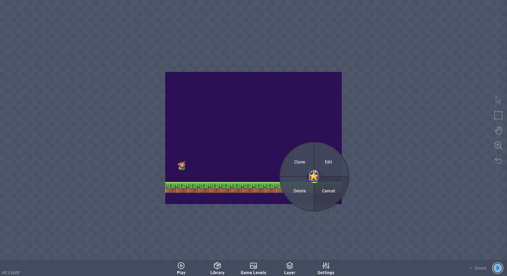
Foto da tela.
Clique na estrela. Abre a roda do objeto, com Clone, Edit, Delete e Cancel. (Cuidado: Delete apaga o objeto.)
A estrela é um tipo, e os blocos dela (girar, brilhar, fazer barulho, sumir quando o boneco encosta) pertencem ao tipo. Cada estrela nova que você clonar já nasce sabendo tudo isso.
- Abriu o painel do objeto, e não a roda
- Feche o painel e clique na estrela de novo, uma vez só.
- Cliquei no chão
- Clique em cima da estrela, na ponta direita da fileira.
CLONE a estrela
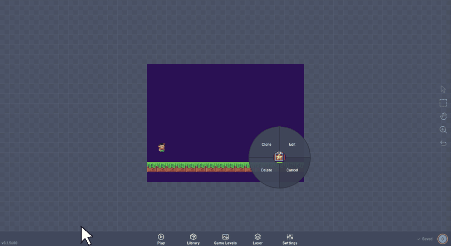
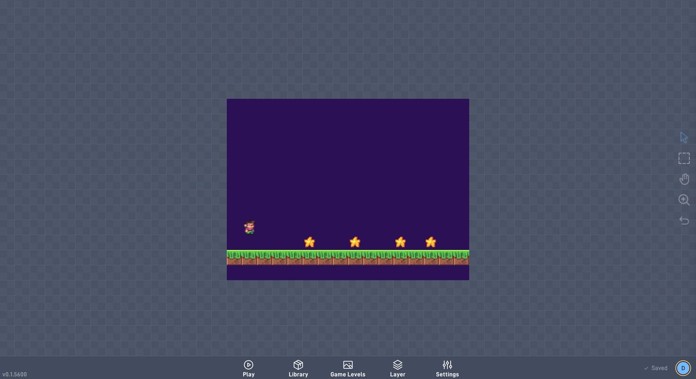
O clipe repete sozinho. Repare onde o cursor vai antes de clicar.
Foto da tela.
Clique em Clone e, depois, clique em três casas vazias da mesma fileira, à esquerda da estrela: a sexta, a nona e a décima segunda casa, contando da esquerda (a estrela está na 14ª). Termine em done cloning.
Fica com quatro estrelas em cima do chão.
- Clonei em cima de outra casa
- Aperte Undo ou clique na estrela repetida e use Delete (só nessa estrela).
- Esqueci o done cloning
- Clique em done cloning, no alto, para sair do modo de clonar. Se não sair, as próximas cliques viram estrelas.
JOGUE o seu jogo
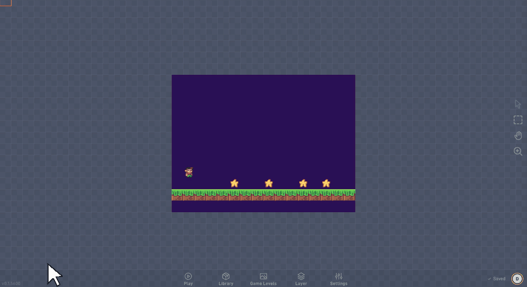
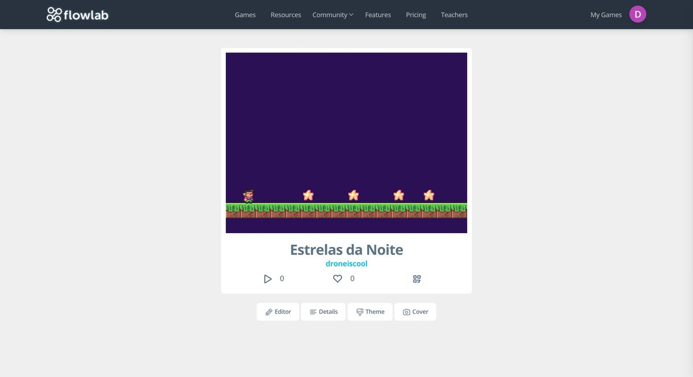
O clipe repete sozinho. Repare onde o cursor vai antes de clicar.
Foto da tela.
Clique em Play.
Olhe: o nome do jogo aparece embaixo da tela, o céu é roxo, o boneco é o novo e as quatro estrelas giram e brilham.
- O nome ainda é Copy of New Game
- Volte ao editor (aperte Esc), abra o Settings e escreva o nome. Aperte o OK no fim.
- O jogo abre sem as estrelas novas
- Confira se você terminou o done cloning.
Pegue as estrelas
Foto da tela.
Clique dentro da tela do jogo (para o teclado valer), corra com a seta para a direita e pule com a seta para cima.
Quando o boneco encosta numa estrela, ela some e faz o barulho de moeda. Pegar as quatro é o desafio: se pular na hora errada, o boneco passa por cima da estrela.
- O boneco não anda
- Clique dentro da tela do jogo antes de apertar as setas.
- O boneco passa direto pelas estrelas
- Ele pulou alto demais. Corra sem pular perto de cada estrela.
- O boneco saiu da fase
- Ele passou do fim do chão. Aperte Esc para voltar ao editor e jogue de novo.
Veja o jogo com o NOME na lista
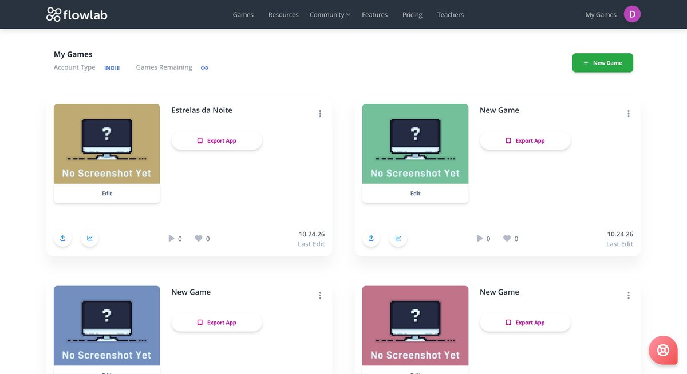
Foto da tela.
Volte para My Games (no alto da página). O primeiro cartão agora tem o seu nome no lugar de Copy of New Game.
- O cartão ainda diz Copy of New Game
- Aperte F5 para recarregar a lista. Se continuar, o OK do Settings não foi apertado: volte ao editor e refaça o passo 8.
Abra o COMPARTILHAR
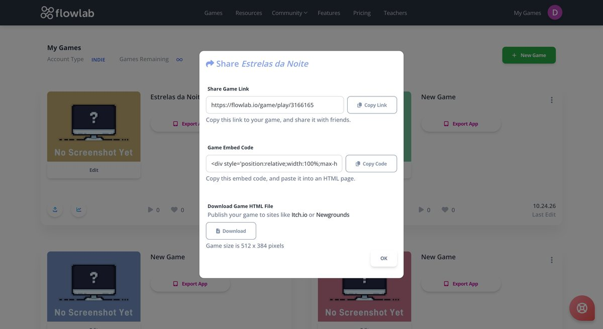
Foto da tela.
No primeiro cartão, clique no botão redondo com a seta para cima, embaixo à esquerda (o primeiro de dois botões redondos).
Abre a janela Share, com três partes: Share Game Link (o endereço do jogo), Game Embed Code (para colocar o jogo numa página da internet) e Download Game HTML File.
O que você usa hoje é o link.
- Abriu o gráfico em vez do compartilhar
- Você clicou no segundo botão redondo (o gráfico). O compartilhar é o primeiro, o da seta para cima.
- O número do link é do jogo antigo
- Você abriu o compartilhar do cartão errado. Feche no OK e confira qual cartão tem o seu nome.
COPIE o link
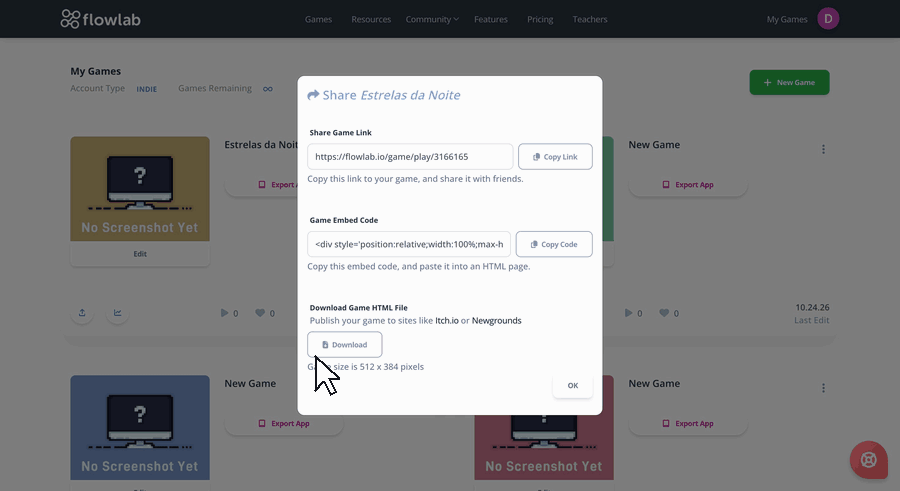
O clipe repete sozinho. Repare onde o cursor vai antes de clicar.
Foto da tela.
Clique em Copy Link, ao lado do endereço. O endereço fica selecionado em azul e o link é copiado — como se você tivesse apertado Cmd+C (ou Ctrl+C).
Agora é só colar (Cmd+V, ou Ctrl+V) numa mensagem: no WhatsApp do professor, no e-mail, onde o professor e a sua família combinarem.
Feche a janela no OK.
- Colei e apareceu outra coisa
- Você copiou outra coisa depois. Volte e clique em Copy Link de novo.
- Não achei o Copy Link
- É o botão ao lado direito do endereço, na primeira parte da janela.
ABRA o link e mostre

Foto da tela.
Abra uma aba nova do navegador, cole o link na barra de cima e aperte Enter.
Abre a página do jogo, com o nome e o botão de jogar. É o que a sua família vai ver.
Mostre o seu jogo, e conte o que foi mais difícil e o que foi mais divertido de fazer.
- Abriu a página do Flowlab, mas sem o jogo
- Confira se você colou o endereço inteiro, até o último número.
- O endereço não abre
- Confira se ele começa com https://flowlab.io/game/play/ e termina com o número do seu jogo.